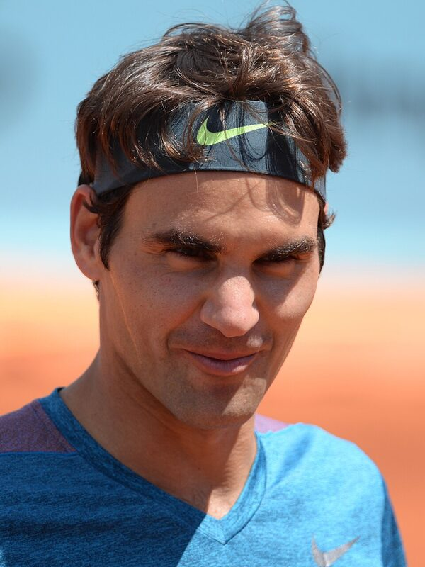

Roger Federer

- Age: 45, born 8 August 1981 in Basel, Switzerland
- Started tennis at: 3 years old
- Height and weight: 1.85 m, 85 kg (competing)
- Major competitions won: 20 Grand Slam singles titles and 103 career titles
- Current ATP ranking: Retired on 23 September 2022. He spent 310 weeks at No. 1, a record 237 of them in a row